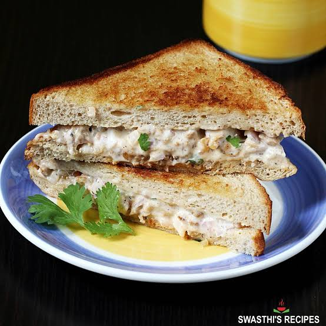

A classic creamy chicken mayonnaise sandwich

A classic creamy chicken mayonnaise sandwich takes about 20 minutes to make and serves 2 people. Pan-seared spiced chicken shreds are tossed with crisp vegetables, herbs, and a tangy dressing before being layered onto toasted bread
Ingredients
- Chicken: 180 grams boneless chicken breast or thigh (or 1 cup pre-cooked shredded chicken).
- Cooking Fats: 1 tablespoon oil and 1 tablespoon unsalted butter for cooking the chicken, plus 2 tablespoons butter for toasting.
- Spices & Seasonings: ¼ teaspoon salt, ¼ teaspoon black pepper powder,¼ teaspoon paprika (or red chili powder), ¼ teaspoon garlic powder, ¼ teaspoon onion powder, and ¼ teaspoon garam masala (or cumin and coriander powder).
- Creamy Dressing: 2 tablespoons mayonnaise, 1 tablespoon sour cream (or Greek yogurt), ¼ teaspoon Dijon mustard, and ½ tablespoon lemon juice.
- Fresh Vegetables & Herbs: ¼ cup shredded lettuce (plus extra leaves for layering), 2 tablespoons finely chopped red onion, and 2 tablespoons finely chopped coriander leaves.
- Bread: 4 slices of sandwich bread (white, whole wheat, or multigrain).
Step-by-Step Instructions
- Cook the chicken. Heat the oil and 1 tablespoon of butter in a pan over medium heat, then cook the boneless chicken until tender and cooked through.
- Season and shred. Lower the heat, add the salt and all the spice powders, and stir-fry for 1 minute before turning off the flame. Let the chicken cool completely, then shred or chop it into small bite-sized pieces.
- Toast the bread. Butter the bread slices on both sides and toast them in a pan, toaster, or air fryer until crisp and golden brown.
- Mix the filling. In a mixing bowl, combine the mayonnaise, sour cream, mustard, and lemon juice. Fold in the shredded chicken, shredded lettuce, red onion, and coriander leaves until evenly coated.
- Assemble and serve. Spread a thin layer of mayonnaise on a toasted bread slice, place a fresh lettuce leaf on top, and spoon a generous portion of the chicken filling over it. Cover with a second slice of toast, slice in half, and serve immediately.
Home